In the Java Mechanics chapter of your textbook, you learned about the mechanical steps you follow to write your own programs. For this, your second homework assignment, you'll put that theory to work. In this, and the next two homework assignments, you'll learn how to use DrJava to create three different kinds of programs:
- a simple Java console-mode application.
- a graphical application, using simple popup windows.
- a Java applet that can be embedded inside a Web page.
Each of these "simplest possible programs" will just print your own name, along with a little message, when you run them.
Go ahead and start DrJava on your own machine, log in using your
OCC email address (without the @student.occ.cccd part [1]),
and your OCC student ID as your password (including the leading,
capital C[2]), just as you did in your first class meeting.
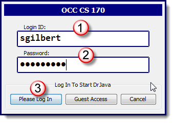
Click the Please Log In button to connect with the CS 170 server, and then, follow along with the rest of these instructions.If you don't immediately get connected, then wait a minute and try again. You can do this a couple of times. Our OCC class this semester is hosted on Google's AppEngine, which sometimes takes a minute or two to start up the application if no-one else is online at that time. If you get the "Server not available" after a few attempts, then log in as a Guest. You won't be able to automatically submit your assignments, but you can complete them and then bring your source code to school (before the deadline), and I'll help you get them submitted.
Step 1: Source Code
As you know from the textbook, the first step in
writing a computer program is to type the Java instructions
that your program should follow. In DrJava, you'll type your
source code in the Definitions Pane in the top-right
portion of the screen:
 When DrJava starts up, it creates an Untitled blank file
in the left pane (called the Files Pane). All you have
to do is to add the rest of the code!
Of course, you don't know the Java programming language
(yet!!!), so all you have to do right now is type in the code
I've supplied here:
When DrJava starts up, it creates an Untitled blank file
in the left pane (called the Files Pane). All you have
to do is to add the rest of the code!
Of course, you don't know the Java programming language
(yet!!!), so all you have to do right now is type in the code
I've supplied here:
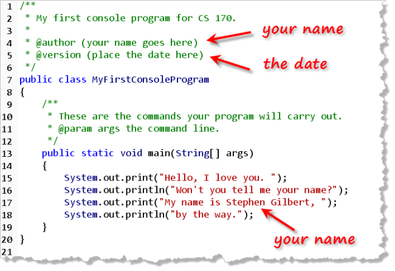
Make sure you replace the text following the@author tag with
your name. (Delete everything following, including the parentheses).
Do the same thing with the following (@version) line, replacing the
placeholder with the date that you completed the work.
Finally, make sure you replace my name with your own in the third
statement inside the main() method. (Line 16 in
the screenshot.) When you've typed in all of the code shown here,
save your file. Since we haven't saved this file before, navigate
over to the Chapter01 folder, and save the file
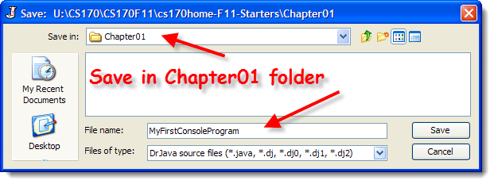
Notice that DrJava automatically supplies a name (MyFirstConsoleProgram) that matches the name of the class in the definitions pane. DrJava also supplies the.java extension if you fail to type
it in.
Step 2: Compile Your Code
Once your program is successfully saved, you'll need to convert
it to Java machine code (called bytecode) that the computer
can understand. You can do this in two ways:
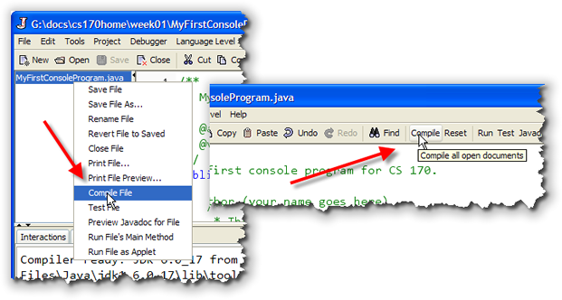
- Right-click the name of the file you want to compile in the Files Pane, and select Compile from the context menu. This is how you compile a single file.
- Click the Compile button on the toolbar. This compiles all open files.
Both of these commands are also available from the Tools
menu and by using the hot-keys F5 and Shift-F5
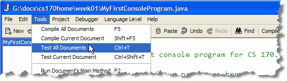
If you have no typos in your code (called syntax errors or compile-time errors in programmer-speak), you'll see a message from DrJava that looks like this: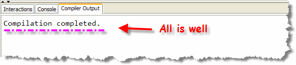
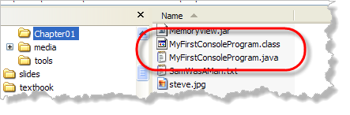
If you look in the directory where you saved your file, (using Windows Explorer or the Mac Finder), your folder now has two files: MyFirstConsoleProgram.java and the compiled bytecode file, MyFirstConsoleProgram.class.Fixing Errors
If you make a mistake when writing your program,
then DrJava will display an error message when you try to compile
your code. For instance, if you misspell the word static
as statix, you'll see something that looks like
this:
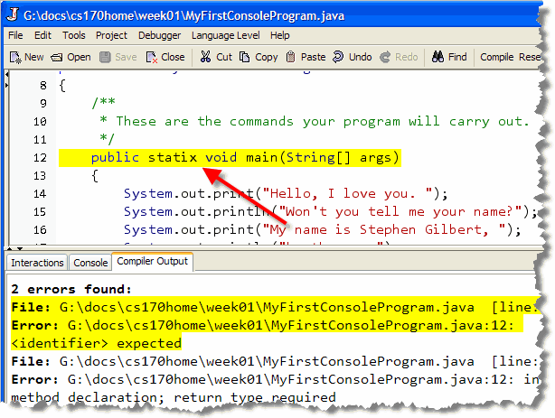
As you select the different errors in the Compiler Output Pane, DrJava will do its best to place the cursor near or at the error in the editor.Remember, you must compile your code (without errors), before you can run your program.
Step 3: Run Your Program
Compared to what you've gone through so far, running your program is kind of simple:
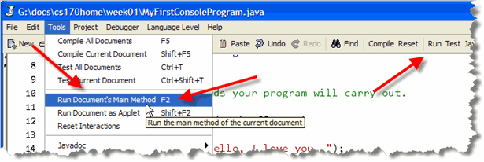
You can:- use the menu command Tools->Run Document's Main Method.
- press the F2 key.
- click the Run button on the toolbar.
If all goes well, your output will appear in the DrJava
Interactions Pane like this:
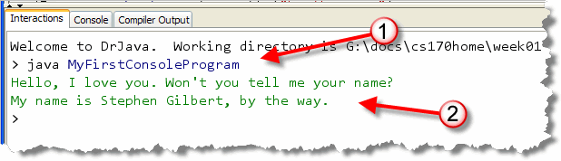
Notice that the Interactions Pane shows (1) the command used to launch your program (just as if you typed it at the shell window), and (2) the output of your program. DrJava also has a Console Pane where you can see the
output without seeing the command used to run your program:

Other Errors
Of course, even if your program compiles and runs, that doesn't
mean it's correct! When you run your program, it may contain
runtime errors that cause it to crash or hang, like this:

Even if your program doesn't crash, it still may not produce the
output that you expect. This time of error is called a logic
error. Here's an example:
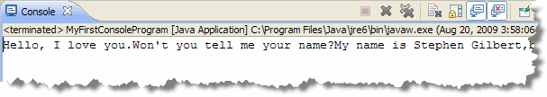
Step 4: Test Your Program
As you just saw, even though your program produces output, that output may not be "correct". What do we mean by correct output? Well, correct output is when your program does "what it is supposed to do". Let me give you an example:
In this case, your program is supposed to:
- Produce two lines of output
- Contain your name, not mine, on the second line
You can test your program by running it and then manually looking at the output to see that it meets those requirements. For a simple program like this, that's fairly easy. For more complex programs, though, that can get pretty tedious, and error-prone.
A better solution is to run a unit test. A unit test is simply a program that runs your program, and then compares its actual output to the output it would produce if it ran correctly. Later on, you'll learn to write your own unit test programs, (that's what the DrJava "Test" options on the Tools menu do), but for the first portion of the course, you'll just use unit test programs that I've written.
Running CheckResults
To run the unit tests for your exercises or homework assignments,
you'll use the CheckResults program that I've supplied:
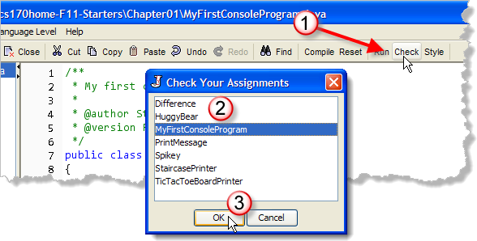
To test your code:- Click the Check button on the DrJava tool bar.
- When the Check Your Assignments dialog window appears, locate the prewritten unit test program that I've supplied. Since I've supplied you with a test program for MyFirstConsoleProgram, you'll choose that.
- Finally, just click OK and the unit tests for you program will be run in the DrJava Interactions Pane window.
When the tests are run, each test will be listed, along with "weight"
assigned to that test. As you can see, some tests count more than others.
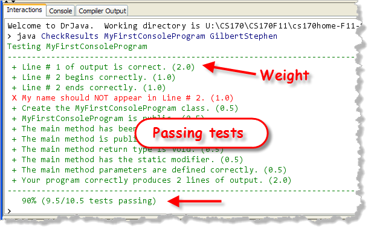
Passing tests are printed in green, and failing tests are printed in red. As you can see, my program passed all of the tests except for the one that checked to see if you replaced my name with yours. (Of course, my name really is Stephen Gilbert, so I guess that doesn't count.) At the very bottom, you'll see the weighted average of the number of tests that pass.Checking Style
Although the majority of your programming problems will be evaluated based on correctness, as reported by the Check program, on the Proficiency Quizzes, between ten and fifteen percent of your grade will be based on style: your adherence to a specific set of layout and naming conventions.
You can find out more about the specific CS 170 style rules in the textbook. For right now, though, you can check the program you've just written by clicking the Style button on the toolbar:
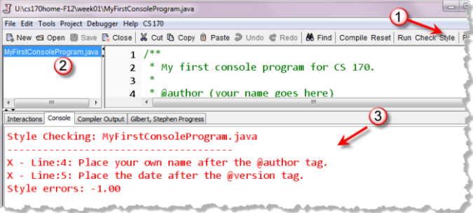
When you click the button, you'll be able to see the number of style errors along with a short error message about each problem. In my case, there are two errors, since I haven't added my name or date to the beginning of the file in the form that it was required.If you run Style and see any errors that talk about indentation, simply select all the lines in the file (with Control + A) and then choose Indent Lines from DrJava's Edit menu.
Checking Your Progress
After you complete each homework or lab assignment, check the
Progress button on the toolbar, and you'll be shown a
current assignments, along with your progress:
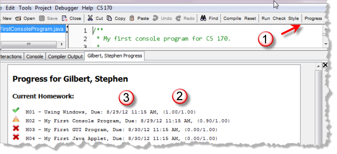
If you've complete an assignment, you'll see a green checkmark. If you got an assignment partly correct, you'll see a yellow "caution" icon. Those assignments you haven't attempted will have a red "X".If you don't get a perfect score, try again, until the progress dialog shows you've got it perfect. You can try as many times as you want, up until the assignment deadline, which is different for each class. When you close DrJava, your progress is uploaded to the server so your grade can be recorded.
After you check your progress, make sure you close DrJava. Then, to make sure that your progress has been correctly uploaded to the server, restart DrJava and check your progress again. When you start DrJava, it downloads your recorded progress from the server, so you can check that your assignment was submitted correctly. Do not remove your USB drive with DrJava still running, or just shut your machine down, with DrJava running.